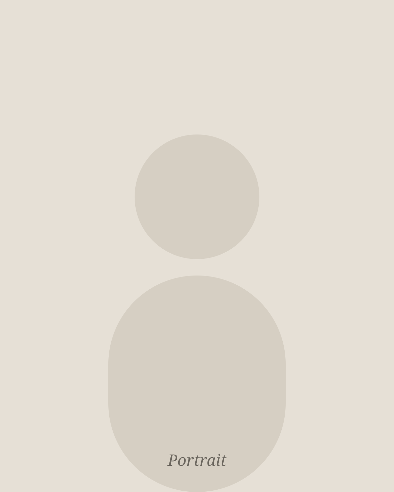

About
Cris Dominguez
Visual artist, teacher, and storyteller. Bilingual in English and Spanish.

Bio
Maria Cristina “Cris” Dominguez is a visual artist working across painting, drawing, sculpture, photography, and mixed media. She has lived and studied in Lima, Guadalajara, and, since 2024, a small fishing village on the Pacific coast of Nayarit, Mexico, where she attends Crimson Global Academy online and expects to graduate in May 2027.
In 2025 she earned a merit scholarship to the School of the Art Institute of Chicago's summer studio intensive, where she produced more than twenty works and learned, in her words, “to play again.” Back home, she founded and teaches a free after-school art program for children at the local Montessori school. She also hosts Muses of Apollo, an art podcast made in collaboration with peers in Japan.
Artist Statement
I make work about the masks we wear and what happens when we take them off. Somewhere along the way, most of us learn to perform the version of ourselves we think will be liked. Teaching art to children in a village of a few hundred people showed me the opposite: kids who test, observe, and adjust without asking whether they are “doing it right.”
“A mistake is not who we are; it's an opportunity to learn and grow.”
In my studio I try to keep that freedom. I let mistakes stay in the piece. I work across painting, drawing, sculpture, and photography because each one asks me to start over as a beginner. The colors, light, and humidity of the Pacific coast, and the people I share it with, find their way into almost everything I make.
For me, the process, not the result, is where the meaning lives.
Education
- 2024 – 2027
Crimson Global Academy · U.S. & WASC accredited, online
- Grades 10–12 · Expected graduation May 2027
- Advanced Placement coursework
- 2016 – 2024
American School Foundation of Guadalajara · Guadalajara, MX
- Grades 1–9 · U.S. accredited
Art Training
- 2025
Summer Studio Intensive, School of the Art Institute of Chicago · Chicago, IL
- 3-week intensive, 35–40 studio hours per week (merit scholarship)
- Created 20+ works in painting, drawing, sculpture, and photography
- 10 critiques and workshops with instructors and peers
- 2026
Improv Theater Student · Alameda, CA
- Live scene work; taking creative risks and turning mistakes into collaboration
- 2021 – now
Voice & Guitar, Andalucia School of Music
- Weekly practice in tone, versatility, and songwriting
Honors & Awards
- 2026
CGA Press Creative Writing Prize
- Awarded to one student across all age levels
- 2025
SAIC Merit Award
- 40% merit scholarship for artistic skill, creativity, and portfolio excellence
- 2025 – now
CGA Student Ambassador
- Led peer meetings and created 7 motivational videos for students
- 2024 – now
National Honor Society
- Selected for scholarship, leadership, and service
- 2023 – now
Academic Merit Scholarship
- 40% tuition scholarship for academic achievement, leadership, and service
Exhibitions
PLACEHOLDER — add exhibitions (title · venue · city · solo/group · year).
Teaching & Community Arts
- 2024 – now
Founder & Art Teacher, After-School Art Program · Montessori school “El Jardín,” Nayarit, MX
- Founded a free program for 10 students ages 5–12 at a nonprofit school; 4 hours of weekly instruction
- Design lessons in drawing, painting, sculpture, and mixed media tailored to each age and skill level
- Lead individual and collaborative projects that encourage experimentation and confidence
- 2023 – 2024
Design & Marketing Developer · Helping Hearts, Guadalajara, MX
- Designed social media posts and visual campaigns for mental-wellness events
- Created accessible, stigma-reducing visuals encouraging student participation
- 2025
Teacher Assistant · Escuela Bilingüe Internacional, Oakland, CA
- Play-based, personalized learning for 10 children ages 4–8
Film, Media & Writing
- 2025 – now
Founder & Host, Muses of Apollo · art podcast, Spotify for Creators
- Cross-cultural conversations about art with peers in Japan; 2 episodes released, 4 in production
- 2024
Director & Editor, 30-minute documentary · San José, Costa Rica
- Interviews, filming, and editing documenting a four-week service-learning program
Collections
PLACEHOLDER — private or institutional collections holding her work (or delete this block).
Skills & Languages
- LanguagesEnglish (native) · Spanish (native)
- SoftwareAdobe Photoshop · Canva · Google Workspace · Microsoft Office · video editing
- MediaPainting · drawing · sculpture · photography · mixed media · documentary film